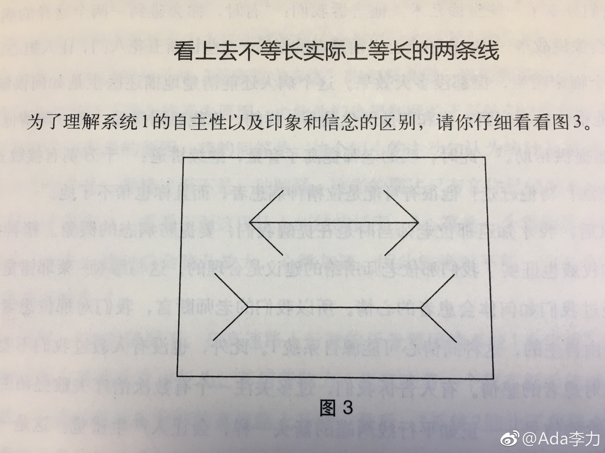

最近再重读一些经典，比如《思考，快与慢》。这个错觉图里的两根线，实际是一样长。
消除这种错觉，唯一能做的就是遇到这种情况时，必须学会怀疑自己的感觉。而应用这一规则，你必须具备识别这种话错觉模式的能力。
但是，你眼中所见的两条线肯定还是一长一短。
我忽然想到自己经常纠结这个事情：知道道理，但还是改变不了认知。现在发现并不需要改变认知，你眼睛里看到的就是那个样子，一长一短，这改变不了。道理只是为了让你识别这种情况，告诉你自己，遇到这种情况，再用其它方式验证下。
消除这种错觉，唯一能做的就是遇到这种情况时，必须学会怀疑自己的感觉。而应用这一规则，你必须具备识别这种话错觉模式的能力。
但是，你眼中所见的两条线肯定还是一长一短。
我忽然想到自己经常纠结这个事情：知道道理，但还是改变不了认知。现在发现并不需要改变认知，你眼睛里看到的就是那个样子，一长一短，这改变不了。道理只是为了让你识别这种情况，告诉你自己，遇到这种情况，再用其它方式验证下。
- 